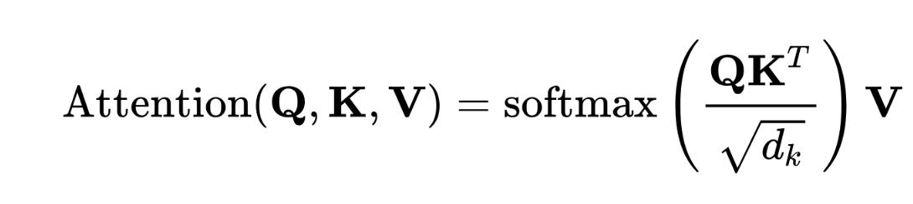
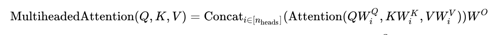
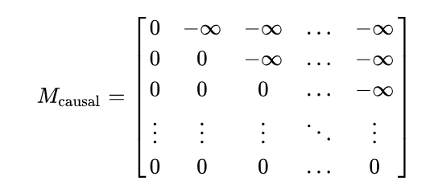
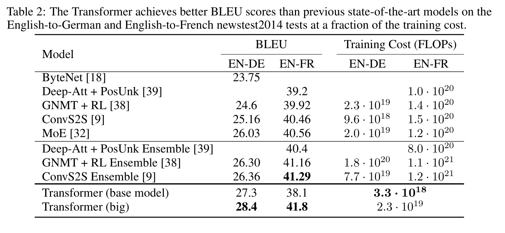

Atención en Transformers
Por Adrián Gómez Satorre
El mecanismo de atención permite a las redes neuronales entender de forma profunda las relaciones que se dan entre los elementos de un dato secuencial. Su uso es el núcleo de los transformers y, por tanto, es el responsable de su éxito.
Contexto histórico
A la hora de tratar datos secuenciales, las redes neuronales convencionales no son capaces de procesarlas adecuadamente, pues no pueden entender su carácter secuencial y las relaciones que se dan entre sus distintos elementos. En una oración, por ejemplo, adjetivos y sustantivos a los que se refieren pueden estar bastante separados entre sí, o su orden puede indicar un tono literario.
La primera gran innovación en este ámbito fue la creación de las Redes Neuronales Recurrentes (RNN, por sus siglas en inglés). En este tipo de redes, las entradas de las neuronas se componen del elemento de la secuencia a procesar y del resultado de la misma neurona en la iteración anterior. Sin embargo, siguió viéndose afectada gravemente por el problema del gradiente desvaneciente, el cual impide aprender relaciones de gran separación o tamaño (p.ej., una sección de un texto que haga referencia a un apartado anterior). Para reducir su efecto nocivo, en 1995 se dio a conocer un subtipo de RNN conocido como LSTM (Long Short Term Memory), en el cual las neuronas son capaces de mantener información dentro de ellas. Sin embargo, otro grave inconveniente de las redes recurrentes quedaba sin resolver: no se puede paralelizar, pues obligan a procesar los datos de forma secuencial.

Otro concepto de gran importancia fue el de la atención. Surgido en los 80, su uso conjunto con las RNN permitió un nuevo avance en el campo. Debido a su relevancia en la estructura general del transformer, se explicará en el apartado siguiente. Avanzando más en el tiempo, la siguiente innovación fue el uso de la combinación RNN-Atención en redes neuronales de estructura encoder-decoder. En este grupo de estrategias, la familia de modelos seq2seq destacó especialmente. Surgió en 2014 y causó gran interés, incluidos los investigadores de Google. Indagando como posibilitar la paralelización en estos modelos, científicos de la susodicha empresa propusieron una idea revolucionaria. En el artículo Attention is all you need, plantearon deshacerse de las neuronas RNN y centrar la estructura encoder-decoder en el mecanismo de atención. Éste es el modelo conocido como transformer, y que tan revolucionario se ha vuelto gracias a dos grandes propiedades: puede aprender relaciones entre elementos separados más fácilmentes, y se puede paralelizar.
El Mecanismo de atención
La función de atención presentada en el artículo fundacional del transformer es el llamado en inglés Standard Scaled Dot-Product Attention, que traduciremos aquí como atención escalada del producto escalar. La fórmula es la siguiente:

Para poder explicar su significado y funcionamiento, necesitaremos datos de ejemplo. Usaremos la frase La heroica ciudad dormía la siesta. para ello, que primeramente debemos tokenizar y obtener una representación vectorial de cada palabra mediante una técnica llamada embedding. Así, además de representar las palabras en un espacio vectorial podemos operar con ellas en este espacio y obtener información. Adicionalmente, será imprescindible aplicar una técnica de positional encoding, pero por su importancia, se explicará en otro apartado. Una vez hemos obtenido estos vectores para cada palabra, debemos obtener un vector Query, Key y Value (Q,K,V) para cada uno. Para ello, cada vector se deberá multiplicar por las correspondientes matrices de pesos WQ, WK y WV, que serán objetivos de modificación durante la fase de entrenamiento. El vector Q contiene la información buscada por la palabra en las otras candidatas. Por otro lado, K representa los datos de la palabra que podrían encajar con lo solicitado en los vectores Q de otros tokens. Finalmente, V es la información que debería añadirse a las otras palabras que estén relacionadas con esta.
Podemos entender más fácilmente estos vectores con la analogía de buscar libros en una biblioteca que correspondan a ciertos temas:
- El vector Query correspondería a los datos que proporcionamos al bibliotecario acerca de la información que buscamos en los libros. Por ejemplo, que nos interesan los libros relacionados con la computación y el NLP.
- Los vectores Key serían las fichas de los libros, que contienen un resumen de que temas se pueden encontrar en ellos y donde localizarlos.
- El vector Value, finalmente, representa la información que adquiriremos al leer el libro.
Tras calcular los vectores Q y K, el proceso de atención requiere ahora que hagamos el producto escalar de todos con todos. Los valores resultantes para cada par de palabras (incluidas sí mismas) representan la relación entre ambas.

Sin embargo, estos valores son inconvenientes tal como resultan, por lo que debemos adecuarlos. A todos los valores resultantes de un mismo vector Query se les aplica la función softmax para normalizarlos, pero antes se dividen por \(\sqrt{d_k}\), la raíz cuadrada de la dimensión de los vectores K, para facilitar el cálculo de los gradientes en la fase de entrenamiento.

Tras esto, cada valor distinto de 0 es multiplicado por el vector V del vector Key relacionado con el número, por lo que en cada casilla de la matriz de atención tenemos un vector Value escalado a la importancia para la palabra de la que proviene la Query sobre el total de términos. Estos vectores, al sumarse para cada fila i de la matriz, nos da \(\Delta\)Ei, el vector que debe sumarse al vocablo que originó el vector Q de la fila para añadirle el valor de las relaciones con otras palabras que se han detectado en esta frase.
Así funcionaría el macanismo de atención en su forma más básica, pero esto no basta para entender como funciona el transformer, es necesario revisar varios conceptos más. El primero es la Atención Multi-cabeza: en cada bloque de atención se realiza el tipo de atención anterior varias veces sobre el mismo dato a la vez, con el objetivo de encontrar más relaciones entre palabras de forma paralela; cada una de estas paralelizaciones se denomina "cabeza". A la hora de actualizar los valores de los embedding, en vez de realizarse las sumas en cada "cabeza", se multiplica cada \(\Delta\)Ei por una matriz de pesos WO y se concatenan, para finalmente sumarse al vector de palabra correspondiente.

Otro punto importante es la diferencia entre self-attention y cross-attention. La primera se corresponde con el mecanismo presentado en este apartado, donde los vectores Q, K y V se obtienen sobre el mismo valor secuencial. Esto hace que este tipo de atención encuentre relacione entre los elementos del propio dato. Sin embargo, el segundo tipo obtiene K y V de una muestra distinta a la de Q, por lo que sirve para obtener relaciones entre los valores de distintas muestras. En el transformer se usa para mezclar la información procesada en el encoder y el decoder.
Finalmente, es necesario mencionar el masked attention o atención enmascarada. Consiste en aplicar una máscara sobre la matriz de atención antes de que se multiplique con los vectores V, que elimina los valores que relacionan vectores Q de elementos con vectores K de otros tokens que son futuros en la secuencia. ¿Por qué se realiza esta operación? El motivo es que los transformers poseen cualidades de modelo autoregresivo, es decir, que su resultado les permite predecir el siguiente valor de la secuencia dada. Esto es muy importante en la fase de entrenamiento. Para poder mantener esta cualidad, es necesario que no se tengan en cuenta que las relaciones de los elementos con los que los suceden no sean tenidos en cuenta.

Para darnos cuenta de la importancia de la atención, podemos revisar el paper original: en él ya se realiza una comparación con modelos de RNN+Atención (Deep-At+PosUnk) o versiones encoder-decoder (ConvS2S), como se puede ver en la tabla siguiente, extraída del mismo. BLEU es una métrica cuyo resultado es mejor a mayor sea el valor, mientras que el coste de entrenamiento, como resulta intuitivo, es mejor cuanto más bajo sea. Como se puede ver, el _transformer_mostraba ya mejores resultados que el resto de opciones con su nuevo paradigma basado en la atención.

Entrenamiento
Como hemos visto, los mecanismos de atención se basan en distintas matrices de pesos que deben ser entrenadas en la fase de entrenamiento. En esta fase, hay distintas tareas que se pueden realizar para este afinamiento:
- En la tarea masked, se enmascaran valores de la secuencia y el objetivo del entrenamiento es predecir el valor o valores eliminados.
- En la tarea autoregressive, se enmascaran todos los valores de la secuencia y el modelo debe intentar adivinar el primer valor. A continuación, se van desenmascarando los tokens uno a uno, en orden secuencial, y cada vez debe el transformer adivinar el siguiente.
- La tarea prefixLM puede ser vista como una variación de la anterior. Sólo se enmascara la segunda mitad de la secuencia, y se usa la primera sección para adivinar el primer token oculto. Se sigue procediendo como en la tarea autoregresiva.
Referencias
- Vaswani, A., Shazeer, N., Parmar, N., Uszkoreit, J., Jones, L., Gomez, A. N., ... & Polosukhin, I. (2017). Attention is all you need. Advances in neural information processing systems, 30.
- Wikipedia contributors. (2025, April 5). Transformer (deep learning architecture). In Wikipedia, The Free Encyclopedia. Retrieved 17:36, April 8, 2025, from https://en.wikipedia.org/w/index.php?title=Transformer_(deep_learning_architecture)&oldid=1284020707
- Wikipedia contributors. (2025, April 3). Attention (machine learning). In Wikipedia, The Free Encyclopedia. Retrieved 17:49, April 6, 2025, from https://en.wikipedia.org/w/index.php?title=Attention_(machine_learning)&oldid=1283799381
- Visualizing and Explaining Transformer Models From the Ground Up - Deepgram Blog ⚡️ | Deepgram. (2024, 13 junio). Deepgram. https://deepgram.com/learn/visualizing-and-explaining-transformer-models-from-the-ground-up
- Wikipedia contributors. (2025, March 23). Seq2seq. In Wikipedia, The Free Encyclopedia. Retrieved 17:53, April 8, 2025, from https://en.wikipedia.org/w/index.php?title=Seq2seq&oldid=1281903332
- 3Blue1Brown. (2024, 7 abril). Attention in transformers, step-by-step | DL6 [Vídeo]. YouTube. https://www.youtube.com/watch?v=eMlx5fFNoYc
- Dot CSV. (2021, 27 septiembre). ¿Qué es un TRANSFORMER? La Red Neuronal que lo cambió TODO! [Vídeo]. YouTube. https://www.youtube.com/watch?v=aL-EmKuB078
- Stanford Online. (2024, 23 abril). Stanford CS25: V4 I Overview of Transformers [Vídeo]. YouTube. https://www.youtube.com/watch?v=fKMB5UlVY1E
- Alammar, J. (s. f.). The illustrated transformer. https://jalammar.github.io/illustrated-transformer/